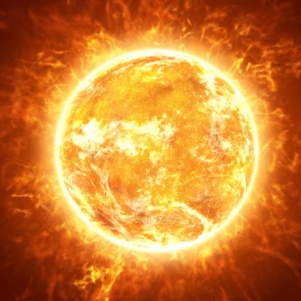

CSC 589 AU / Homework 4 / Image Blending Using Pyramids
Blended Image Example
In this project, our objective was to create a composite image by way of image pyramids. In short, an image pyramid is a stack of images created from an initial image input and a filter. A base image is blurred with the filter kernel (usually gaussian or some other common blurring convolution kernel), then this image is subsampled down to half its original dimensions (1/4 the total area) and becomes the next level in the pyramid- the starter image to be used for the next level when the process repeats again. For our assignment we had to take two input images and an image splitting mask that would composite the images in a desired fashion, build their gaussian and laplacian pyramids, then collapse these pyramids together to reconstruct and form the final, blended image. Most of the code to do this was graciously provided by our professor, Dr. Bei Xiao, in the included file titled 'GeneratePyramid.py'. The functions to blend the image sections and collapse the pyramids had to be written ourselves. Nevertheless, all the functions to do so will be included and discussed.
- kernel specification
- interpolate
- decimate
- pyramids
- construct_pyramid
- blend
- reconstruct
The Functions
kernel specification
kernel = (1.0/256)*np.array([
[1, 4, 6, 4, 1],
[4, 16, 24, 16, 4],
[6, 24, 36, 24, 6],
[4, 16, 24, 16, 4],
[1, 4, 6, 4, 1]])
Provided in GeneratePyramid.py. This little bit of code just provides the binomial 5-tap blurring filter kernel used to blur our images for the pyramids. It is a manual definition of the 5x5 array in numpy and uses no function-driven generation process such as the one used in Problem Set 3 to build a gaussian kernel to specified dimensions.
interpolate
def interpolate(image):
"""
Interpolates an image with upsampling rate r=2.
"""
image_up = np.zeros((2*image.shape[0], 2*image.shape[1]))
# Upsample
image_up[::2, ::2] = image
# Blur (we need to scale this up since the kernel has unit area)
# (The length and width are both doubled, so the area is quadrupled)
#return sig.convolve2d(image_up, 4*kernel, 'same')
return ndimage.filters.convolve(image_up,4*kernel, mode='constant')
Provided in GeneratePyramid.py. The interpolate function does exactly what it says, it interpolates an input image. This function is of critical importance to collapsing the pyramids since it upsamples the input at a rate of 2, doubling the dimensions and reversing the decimating process it undergoes when building the pyramid.
decimate
def decimate(image):
"""
Decimates at image with downsampling rate r=2.
"""
# Blur
#image_blur = sig.convolve2d(image, kernel, 'same')
image_blur = ndimage.filters.convolve(image,kernel, mode='constant')
# Downsample
return image_blur[::2, ::2]
Provided in GeneratePyramid.py. The decimate function is the functional opposite of the interpolate function. Decimate downsamples its input image at a rate of 2, halving the dimensions and this quartering the total area. Before it cuts the size, it blurs the image with the binomial 5-tap filter specified earlier. All of the horsepower in building a new pyramid level is contained within this function, it takes in a given level and returns the next. Creating the levels may be easy, but building the pyramid from these image blocks is a tad more complicated.
pyramids
def pyramids(image):
"""
Constructs Gaussian and Laplacian pyramids.
Parameters :
image : the original image (i.e. base of the pyramid)
Returns :
G : the Gaussian pyramid
L : the Laplacian pyramid
"""
# Initialize pyramids
G = [image, ]
L = []
# Build the Gaussian pyramid to maximum depth
while image.shape[0] >= 2 and image.shape[1] >= 2:
image = decimate(image)
G.append(image)
# Build the Laplacian pyramid
for i in range(len(G) - 1):
L.append(G[i] - interpolate(G[i + 1]))
return G[:-1], L
Provided in GeneratePyramid.py. Pyramids builds the actual pyramids themselves. The only input is a single image to be used as the first (zeroth, as far as Python is concerned) floor of the pyramid. It does this by specifying blank lists for the pyramids, then by repeatedly calling the decimate and interpolate functions, it fills up these lists with subsequent floors for the gaussian and laplacian pyramids. The levels of the laplacian pyramid require the respective levels of the gaussian pyramid to be completed before they can be made, since the gaussian levels serve as their input.
construct_pyramid
def construct_pyramid(img, G):
"""
for display purposes
parameters:
image: the original image
pyramid: the result from pyramids function
returns:
composite_image: the image containing the breakdown of the pyramid
"""
rows, cols = img.shape
composite_image = np.zeros((rows, cols + cols / 2), dtype=np.double)
composite_image[:rows, :cols] = G[0]
i_row = 0
for p in G[1:]:
n_rows, n_cols = p.shape[:2]
composite_image[i_row:i_row + n_rows, cols:cols + n_cols] = p
i_row += n_rows
return composite_image
Provided in GeneratePyramid.py, albeit not constrained to a callable function. Construct_pyramid simply constructs the composite pyramid image from the various pyramid levels. This is purely for visualization and inspection of the pyramid levels, also for education as one of our tasks is to display the composite gaussian and laplacian pyramids in our report as a visual example of the process. Functionally, this serves no role in the actual blending of the images themselves Pyramids builds the actual pyramids themselves.
blend
def blend(im1l,im2l,mask):
blended=[] #empty list for blended levels
for i in range(0,len(im1l)):
left=(mask[i]*im1l[i]) #multiply mask with first image for left half
right=((1-mask[i])*(im2l[i])) #inverse mask with second for right half
blended.append(left+right) #add them together
return blended
Blend follows the trend of practically named functions- it blends the two images according to the specified mask. Like pyramids, it denotes an empty list for the final image data. Then it scans through the laplacian levels and multiplies the levels by the mask to effectively crop the image data. It does this for the second image as well, but it uses the inverse of the mask (zeros become ones and vice versa) in order to crop the correct section- that is to say, everywhere that the first image wasn't cropped. The empty list is then appended with the sum of these two arrays, and the process repeats for the next pyramid level, effectively creating a laplacian pyramid comprised of the combined image levels.
reconstruct
def reconstruct(L):
for i in range(len(L)-1,0,-1):
lupscale=interpolate(L[i]) #start with the smallest
lupscale2 = L[i-1] #take next largest
lsum=lupscale+lupscale2 #sum laplacians
del L[-1]
del L[-1] #delete the 2 used pyramid blocks
L.append(lsum) #append pyramid with collapsed segment
return lsum
Reconstruct performs the collapse of the laplacian pyramids and reconstruction of the various pyramid levels back into a nice, selectively blended image. It does this by taking a pyramid, any pyramid though in this assignment it will take the output pyramid from the blend function above, and calling the interpolate function to upscale the highest level and collapse it into the level below before deleting the two constituent levels and appending this new, collapsed level back onto the pyramid to serve as the new highest level. The process then repeats until there are no more levels to collapse and the output is an image of the same dimensions and quality as the original image that was built into a pyramid. Since the sharp edge between white and black on the mask is blurred as its pyramid is created, that means our blended image is blurred only at the edge of contact between the two images as specified by the mask
Images, Pyramids, and Masks


|
Above are the original images along with their gaussian and laplacian pyramid composite images. As a note, the laplacian pyramids appear washed out because the laplacian process is in fact edge detection- on an image with poorly defined images such as the apple and orange provided, the distinct features of the laplacian levels become less apparent. Below is the 50/50 image mask used to blend the apple and orange, as well as the final blended image itself.

|
Another Example: The SunFlower


|